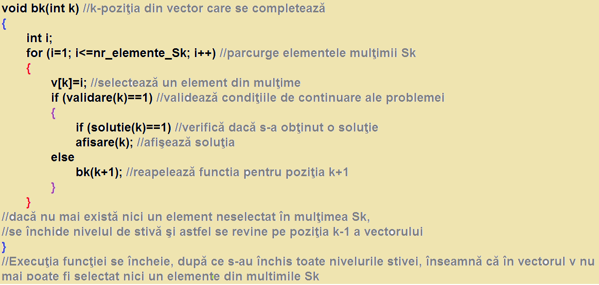

Metoda backtracking
- Scurta descriere:
- Backtracking este o metodă de parcurgere sistematică a spaţiului soluţiilor posibile al unei probleme. Este o metodă generală de programare, şi poate fi adaptă pentru orice problemă pentru care dorim să obţinem toate soluţiile posibile, sau să selectăm o soluţie optimă, din mulţimea soluţiilor posibile. Backtracking este însă şi cea mai costisitoare metodă din punct de vedere al timpului de execuţie.
- Forma generală a unei funcţii backtracking
- Implementarea recursivă a algoritmului furnizat de metoda backtracking, este mai naturală şi deci mai uşoară. Segmentul de stivă pus la dispoziţie prin apelul funcţiei este gestionat în mod automat de sistem. Revenirea la pasul precedent se realizează în mod natural prin închiderea nivelului de stivă.
